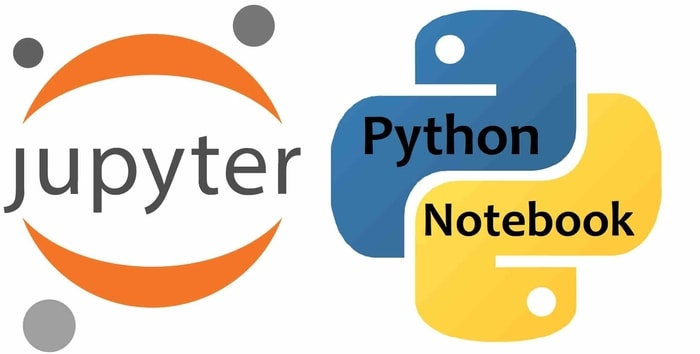

Masters Project
About
Master’s Project
Plan
Minimum
GOT
Notebooks

599 rows × 107 columns
Parameter calculation of available data
Data is obtained from
FRBSTATS
📌 Goal: This notebook tries to calculate some missing parameters from FRBSTATS using methods described in Jia-Wei Luo (2022)
Nov 24, 2022
Murthadza Aznam
UMAP-HDBSCAN Reduced Parameters
What if there available parameters are not as verbose?
📌 Goal: This notebook tries to reproduce the results from https://ui.adsabs.harvard.edu/abs/2022MNRAS.509.1227C/abstract with reduced parameters.
Nov 15, 2022
Murthadza Aznam
Reproducing Chen et. al. (2021)’s unsupervised machine learning
Using UMAP to reduce dimensions and HDBSCAN to cluster datapoints
📌 Goal: This notebook tries to reproduce the results from https://ui.adsabs.harvard.edu/abs/2022MNRAS.509.1227C/abstract. As stated in the paper, verbatim
Oct 20, 2022
Murthadza Aznam
FRBSTATS Data
Get current statistical data from FRBSTATS
📌 Goal: get data from FRBStats
Sep 15, 2022
Murthadza bin Aznam
No matching items